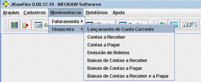

|  |
1. Para efetuar o LANÇAMENTO DE CONTA CORRENTE, selecione na barra de Menu a opção
MOVIMENTAÇÃO, em seguida FINANCEIRO, e LANÇAMENTO DE CONTA CORRENTE. |
![[IMAGE]](images/barraadd.gif) |
2. Antes de preencher os campos, clique em INSERIR NOVO REGISTRO situado na barra de Opções. |
![[IMAGE]](images/barrasalvar.gif) |
3.1 Após preencher os campos, clique no botão VALIDAR REGISTRO CORRENTE situado na
barra de Opções, e em seguida clique no botão SALVAR. |
![[IMAGE]](images/erro.gif) |
3.2 Caso ao clicar no botão VALIDAR REGISTRO CORRENTE aparecer uma janela de erro com
a mensagem "Campo requerido com valor inválido ou não informado", verifique se o dado informado no
campo mostrado pela mensagem está correto. Após corrigir o erro siga os passos do item 3.1 novamente. |